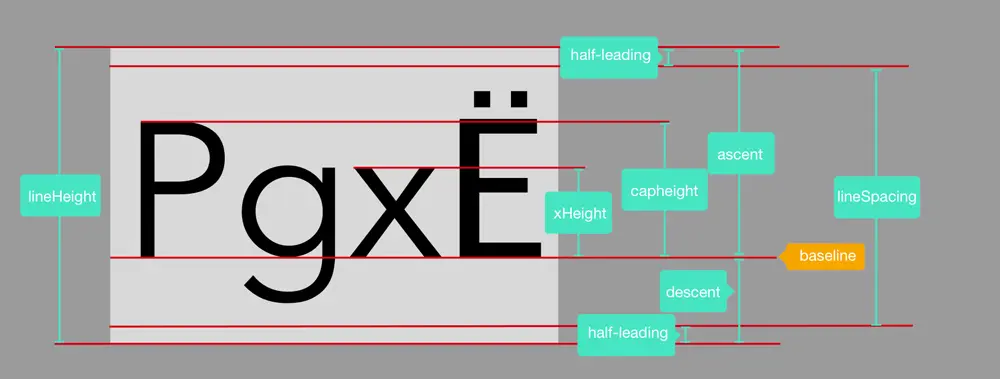

等宽字体
简介
编程时，有一款等宽字体可以让代码看起来更舒适。
英文等宽字体有不少，但是能和中文对齐的不多。
windows自带的宋体和黑体都是严格的中英文宽度2:1的字体，但没有对“0”、“O”等易混淆字形做区分，不适合编程。
这个网站罗列了一些等宽字体：https://www.programmingfonts.org/
一些等宽字体
也有组织或个人尝试制作适合编程的中文等宽字体：
其中有些字体的英文是细长的或中文间隔大，看起来依旧不舒服。
像素风字体
这里提到的所谓像素风格的字体，是指矢量化的点阵字体。
这种字体在特定的字号下，能和显示器的像素网格对齐，避免抗锯齿处理导致的模糊（这对于分辨率不高的屏幕尤其明显）。
这里整理了一些支持中文的等宽像素风字体：
多字体搭配使用
有些编辑器支持配置多个字体，这时可以将一个等宽英文字体和一个中文字体（即使是非等宽的中文字体，汉字的宽度大多一致）搭配使用。
有些英文字体本身就是0.5个字号的宽度，只要和合适的中文字体混合使用，也可以达到等宽效果：
- Ubuntu Mono
- Inconsolata
- monofur
- agave
- 等等
像素风的有
- Greybeard
- Fixedsys
- 等等
手动修改字体
去搜索等宽字体的话，能找到大量宽度为0.6个字号的英文字体：
- Courier New
- Courier Prime Code
- PT Mono
- JetBrains Mono
- Source Code Pro
- 等等
如果有宽度为1.2个字号的中文字体，就能相互配合达到等宽效果。
我们可以利用 fontCreator（付费）、fontForge 之类的软件调整中文字体的宽度。
这里用某个中文字体举例，使用 fontCreator。将其导入 fontCreator，发现这个字体中中文的宽度是2048，那么只需要将它的单格宽度设置为2048/1.2就可以了。只可惜这个式子无法得到整数。
于是，我们先在“工具”→“字形转换器”中将字体宽度调整为可以被1.2整除的2045。

再在“字体”→“属性”中设置每格宽度为1705。

导出后得到尺寸为1.2个字号的字体。
融合字体
进一步，我们可以使用上述软件将两个字体融合。
首先了解一下名词：
- Em Size，是这个字体一个字号的尺寸，这是一个虚拟的单位，用于提供一个比例基准；

- 基线（baseline）是文本排列的那条虚拟线，大多数字母和大写字母的底部都与之对齐。
- Ascent 是从基线到最高字符标准顶部的垂直距离；
- Descent 是从基线到最低字符标准底部的垂直距离。
利用 fontForge 进行简单实践：
- 准备好等宽英文字体，和中文字体（确认好该字体的中文和标点部分是否等宽）。
- 打开 fontForge，打开准备好的英文字体。菜单 Element→FontInfo→General，可以看到改字体的 Em Size、Ascent、Descent。
- 再用 fontForge 打开准备好的中文字体。菜单 Element→FontInfo→General，调整 Em Size 到和英文字体一致。注意勾选右侧的“Scale Outlines”，点击确定后等待软件自动完成缩放。为了融合后更美观，可能还要根据Ascent或Descent对字体进行调整，选中全部或部分字符，菜单 Element→Transformation→Transform 提供了平移、缩放、旋转等功能。
- 菜单 File→Generate Fonts，导出修改后的中文字体。
- 用 fontForge 打开英文字体，菜单 Element→Merge Fonts，选择刚生成的修改好的字体。
- Element→FontInfo 调整字体名。之后就可以导出了。
此实践中调整了中文字体的 Em Size 以适应英文字体，也可以反过来调整英文字体的 Em Size，或同时调整两者。缩放后字体可能会失去原有的观感，所以需要反复试验才能找到最好的效果。也可以不勾选“Scale Outlines”，尝试手动进行缩放、调整字重等操作后，再修改 Em Size。
自制像素字体
首先需要使用点阵生成软件，通过ttf得到bdf文件。比如这个：点阵字库(字模）生成器 4.0。
利用Bits’N’Picas（需要先安装Java环境）将bdf转为ttf，也就是矢量化。再对字体进行平移等微调，修改字体名，导出即可。